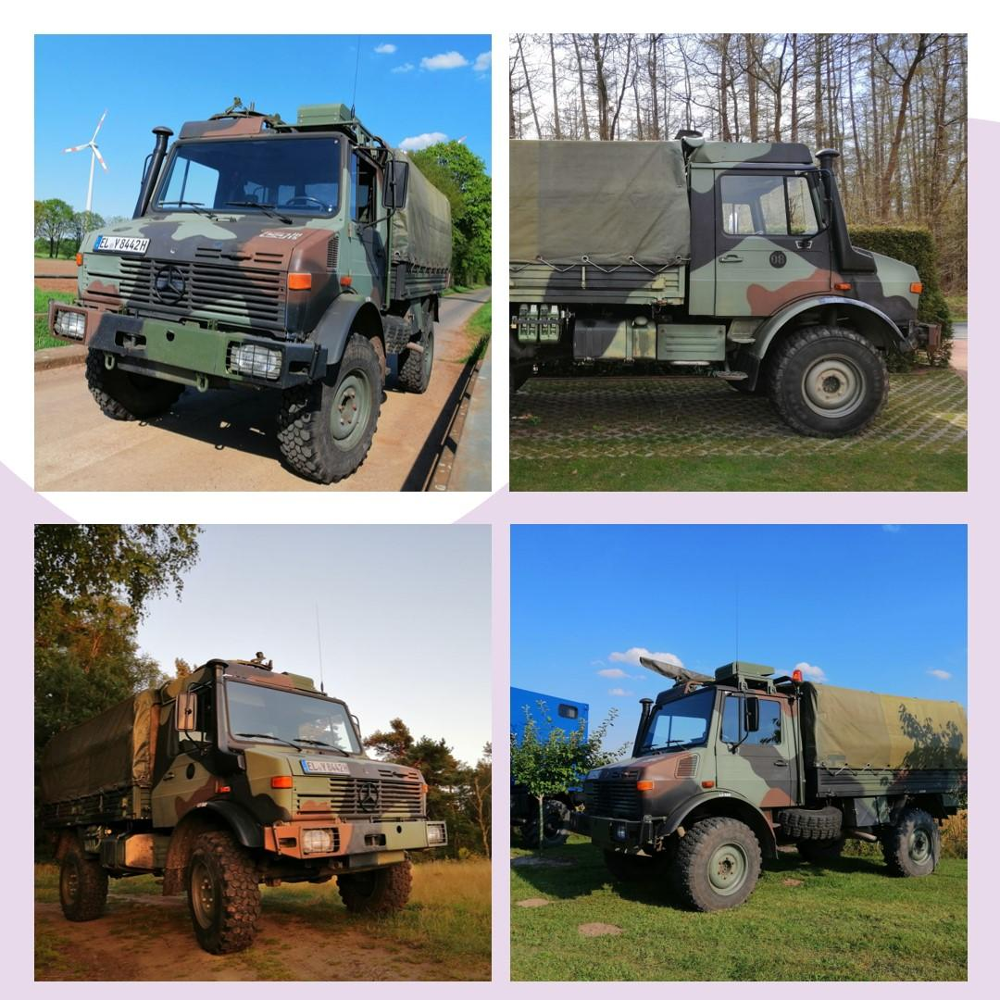

Hersteller: Daimler-Benz
Typ: Unimog 435 / U 1300L
Baujahr: 1986
Besonderheit: Ehemaliger Bundeswehr‑Unimog
Besitzer: Fritz B.
Zul. Gesamtgewicht: 7.490 kg
Leergewicht: 5.300 kg
Nutzlast: 2.200 kg
Abmessungen: 5600 × 2300 × 2800 mm
Motor: OM 352, 6‑Zylinder, Direkteinspritzung
Hubraum: 5.675 cm³
Leistung: 96 kW / 130 PS
Drehmoment: 363 Nm
Höchstgeschwindigkeit: 80 km/h
Kraftstoff: Diesel
Tankinhalt: 160 Liter + 2×20 Liter Kanister
Verbrauch: ca. 20 l / 100 km
Bodenfreiheit: 44 cm
Steigfähigkeit: 45° (100%)
Getriebe: UG 3/40, 8 Vorwärts‑ & 4 Rückwärtsgänge
Antrieb: Portalachsen, zuschaltbarer Allrad, sperrbare Differentiale
Wattiefe: 1,20 m
8‑Personen‑Sitzbank, Drehring‑Lafette, MSA‑Klimaanlage, Rundumleuchten, Flaggenhalter, Vorbaukonsole, Bergeösen, Schutzgitter, originale Beladung, CB‑Funkgerät.
Geplant: Suchscheinwerfer, Tarnscheinwerfer, Rückfahrscheinwerfer, Nebelschlussleuchte, MLC‑Schild, SEM‑Antenne, Pritschenrufanlage, Tarnstangenhalter, weitere Beladung.
1986 – Bau im Mercedes‑Benz‑Werk Gaggenau
01.10.1986 – Gerätedepot Itterbeck
23.11.1988 – Pipelinepionierbataillon 800
13.05.1993 – Pionierkommando 800
31.08.1993 – Instandsetzungsregiment 80
08.02.1994 – Panzerbataillon 424
29.05.1995 – Panzergrenadierbataillon 391
17.07.1997 – Reservebataillon GEC Stabilization Force
12.04.1999 – Bedarfsinstandsetzung Tauberbischofsheim
04.12.1999 – Heeresfliegerregiment 15
02.06.2003 – Transporthubschrauberregiment 15
17.10.2013 – Kommando Strategische Aufklärung
17.07.2018 – Außerdienststellung
05.03.2021 – Neuzulassung (ca. 30.500 km)